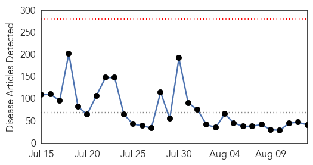
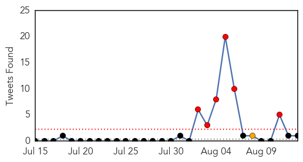
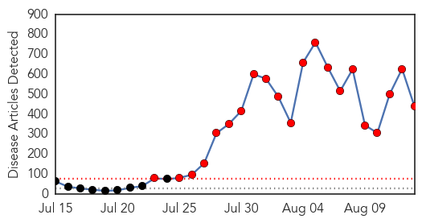
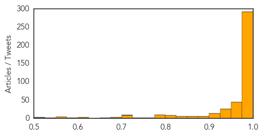

Unknown
30-Day Web Trend
0 alerts, 0 warnings

30-Day Twitter Trend
6 alerts, 0 warnings

Article Locations

Article Confidences

Top Articles:
- 0.918
- West Bengal: Death toll in encephalitis outbreak climbs to 212
- 0.917
- Chicago Tribune
- 0.917
- Chicago Tribune
- 0.910
- The world windows to Thailand
- 0.910
- The world windows to Thailand
- 0.910
- The world windows to Thailand
- 0.886
- Gaza hospitals, health facilities need urgent donor support
- 0.875
- Third ‘Rabbit Fever’ Case Identified « CBS Denver
- 0.866
- Two more rockets fired from Gaza hit Israel
- 0.866
- Israel and Palestinians agree to extend truce 72 hours
- 0.866
- Hamas spokesman denies any rockets fired from Gaza at Israel
- 0.866
- Israeli police confirm rocket strike from Gaza despite truce
- 0.866
- Rocket alerts sounded in southern Israel
- 0.866
- Filipino nationals wait before boarding a ship as part of an evacuation from conflict-torn Libya, in Benghazi
- 0.866
- Ukraine's Naftogaz warns of possible gas transit disruptions
- 0.866
- Russia calls "absurd" suspicions aid to Ukraine is cover for invasion
- 0.866
- France says will supply arms to Iraqi Kurds rapidly
- 0.866
- Iraq's Maliki says Abadi's appointment as PM "has no value"
- 0.866
- Magnitude 5.8 earthquake strikes southwest Mexico -USGS
- 0.866
- Militants sit on top of armoured personnel carrier at a training camp near border with Ukraine close to village of Malaya Kamenka in Rostov region
- 0.866
- Magnitude 5.1 earthquake strikes Ecuador's capital of Quito -USGS
- 0.851
- Fluoride: benefit or risk?
- 0.851
- Bangkok Post
- 0.851
- Bangkok Post
- 0.826
- Rabbit fever confirmed in animal in Greenwood Village
- 0.824
- River Dart Country Park shuts down as officials inspect suspected Norovirus outbreak
- 0.799
- Rabies killing children in Ashanti region
- 0.785
- Rabies killing children in Ashanti region
- 0.764
- Maine concerned about tick-borne diseases
- 0.762
- Cancer cases on the rise, medical care lags behind
- 0.748
- Salmonella cases linked to multistate outbreak, health officials say
- 0.689
- Contaminated sausages 'kill 12 people' in Denmark listeria outbreak
- 0.672
- 77 people killed, 227 injured in heavy flooding across Sudan
- 0.667
- Zim's healthcare system now ‘in crisis’
- 0.659
- Naegleria claims another life
- 0.613
- UPDATE 1-U.S. advisory panel recommends Prevnar 13 vaccine for elderly
- 0.595
- WHO: Gaza Hospitals, Health Facilities "In Dire Need"
- 0.562
- Cystic Fibrosis Patients At Risk From Bacterial Strains Resistant To Antibodies
- 0.536
- Parvovirus attacking puppies in Central Illinois
- 0.536
- World Vision Supporting Response to Floods-Induced Emergency in Sudan - Sudan
- 0.523
- U.S. advisory panel recommends Prevnar 13 vaccine for elderly
- 0.501
- Austin Health hospital mistakenly 'kills off' over 200 patients sending death notices to GPs
Top Tweets:
- 0.666
- Flu Tip: If you have the flu make sure to drink plenty of water! See your GP too. You may need antiviral medications.
- 0.596
- RT: The flu shot can prevent severe flu complications in ppl w/ chronic conditions, such as heart disease NIAM14 http://t.co/O8igy…
- 0.513
- Are you prepared for a flu outbreak or pandemic? Check out these valuable planning resources for schools: http://t.co/FncnOVMUGp NIAM14
Ebola
30-Day Web Trend
21 alerts, 0 warnings

30-Day Twitter Trend
17 alerts, 0 warnings

Article Locations

Article Confidences
Top Articles:
- 1.000
- P&G scientist: Ebola outbreak signals poor health system, lack of investment
- 1.000
- They survived Ebola. Now they are shunned.
- 1.000
- Ebola death toll tops 1,000 in West Africa; WHO says use of test treatments is ethical
- 1.000
- Taiwan Taoyuan Airport to ...｜Society｜WCT
- 1.000
- Why most of the people Ebola kills may never actually contract it
- 1.000
- Ebola: WHO classifies Kenya high risk country
- 1.000
- Zambia screens travelers for Ebola
- 1.000
- Consignment of experimental Ebola drug arrives in Liberia
- 1.000
- Four Indians Forced to Treat Ebola Patients Want Out, Articles
- 1.000
- Ebola: health fears stop British journalist from hosting awards
- 1.000
- No need to issue travel warning for Ebola scare: Ministry
- 1.000
- Possibility Of Ebola Outbreak In Kenya
- 1.000
- Kenya intensifies surveillance to prevent Ebola outbreak
- 1.000
- Ebola: UN Says More than 1 Million People Affected
- 1.000
- WRAPUP 1-Consignment of experimental Ebola drug arrives in Liberia
- 1.000
- Nervous West Africa awaits experimental Ebola drug
- 1.000
- the edge of knowledge
- 1.000
- Otago Daily Times Online News : Otago, South Island, New Zealand & International News
- 1.000
- Trial Ebola vaccines headed for west Africa
- 1.000
- First Africans to get drug
- 1.000
- Malaysia General Business Sports and Lifestyle News
- 1.000
- International Community Struggling in Fight Against Ebola
- 1.000
- Government has taken all measures to control Ebola
- 1.000
- Consignment of Experimental Ebola Drug Arrives in Liberia
- 1.000
- Guinea declares emergency as W.Africa awaits experimental Ebola drug
- 1.000
- Ebola outbreak: Kenya at high risk, warns WHO
- 1.000
- Experimental Ebola drug on its way to Liberia
- 1.000
- Consignment of Ebola drug arrives in Liberia
- 1.000
- Ebola outbreak: Graphics reveal how deadly virus spread from two-year-old in Guinea to be international ‘public health emergency’
- 1.000
- Ebola outbreak: Fears for Lagos - a vast city of 21 million ‘perfect for the virus to spread’
- 1.000
- Ebola outbreak: Deaths from malaria and other diseases could soar while Africa’s over-stretched healthcare systems fight the virus, expert warns
- 1.000
- WHO classifies Kenya as high risk Ebola country
- 1.000
- Gulf Daily News World News GCC reviews Ebola alert
- 1.000
- Consignment of experimental Ebola drug arrives in Liberia
- 1.000
- Nigeria fears Ebola spread to east by infected nurse - Emirates 24
- 1.000
- As Spain buries Europe's first Ebola victim ANOTHER top doctor dies of the killer disease... And it might be spreading to Kenya
- 1.000
- Ebola fears, border closures continue
- 1.000
- More than one million people affected by Ebola outbreak: WHO
- 1.000
- Kenya At High Risk, Warns WHO
- 1.000
- Eight Chinese quarantined as panic grips Ebola-hit west Africa
- 1.000
- Ebola outbreak: Kenya at high risk, warns WHO
- 1.000
- Ebola outbreak: Experimental drug arrives in Liberia to treat doctors; questions raised over ethics, safety
- 1.000
- West African countries anxiously await experimental Ebola drugs
- 1.000
- Consignment of experimental Ebola drug arrives in Liberia
- 1.000
- WHO to assist Vietnam in testing for deadly Ebola virus
- 1.000
- UConn Biologist on West Africa’s Ebola Outbreak
- 1.000
- Glimmer of hope for West Africa
- 1.000
- Travel agencies told to halt tours to Ebola-hit areas
- 1.000
- Kenya on High Alert; WHO Urges More Int'l Aid
- 1.000
- WHO approves experimental Ebola drugs
Showing top 50 articles...
Top Tweets:
- 0.944
- CDC currently has 55 people deployed to W. Africa to fight Ebola’s spread: 14 in Guinea, 18 in Liberia, 16 in Sierra Leone & 7 in Nigeria.
- 0.896
- RT: Saudi Arabia demands pilgrims vaccination during upcoming Hajj season - and measures against Ebola, MERS spread https…
- 0.830
- CDC’s focus is stopping Ebola outbreak in W. Africa. This means finding every person who is sick & tracing their contacts.
- 0.750
- RT: CDC recs, other info in’s “Ebola, violence remind biz travelers to be cautious": http://t.co/kBpmAa5YSu Ebola
- 0.717
- And this is probably just tip of iceberg. RT Ebola outbreak growing at >50 cases per day, @WHO says. Total cases near 2k
- 0.697
- If any contact develops a fever or other Ebola symptoms, that person is isolated & treated, and the tracing cycle starts again.
- 0.684
- CDC is confident US hospitals can safely manage Ebola patients by carefully following infection control recs & isolating in private room.
- 0.645
- Contact tracing = finding everyone who may have been exposed to a person w/ Ebola & checking for signs of illness every day for 21 days.
- 0.640
- Canada to send experimental ebola vaccine to West Africa. HealthSecurity http://t.co/H1JhGCUg02
- 0.633
- Check out new article: Inside the Ebola outbreak with the CDC http://t.co/D0p5Gc8ZTk
- 0.515
- RT: .@charlesjkenny’s interesting & necessary look at global health system as it moves to stop Ebola outbreak from: http…